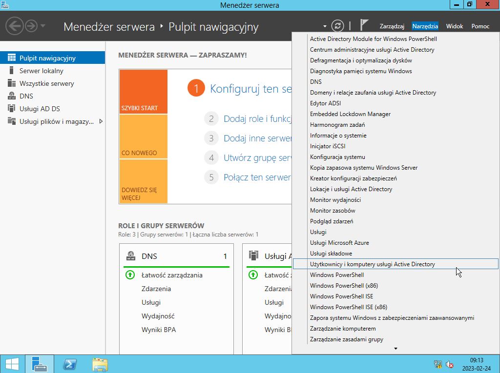
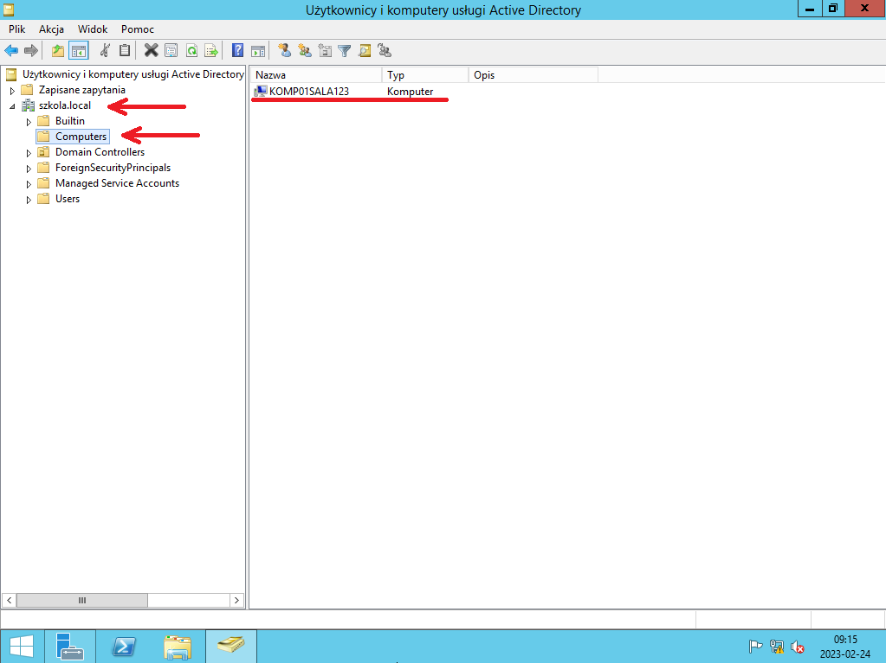
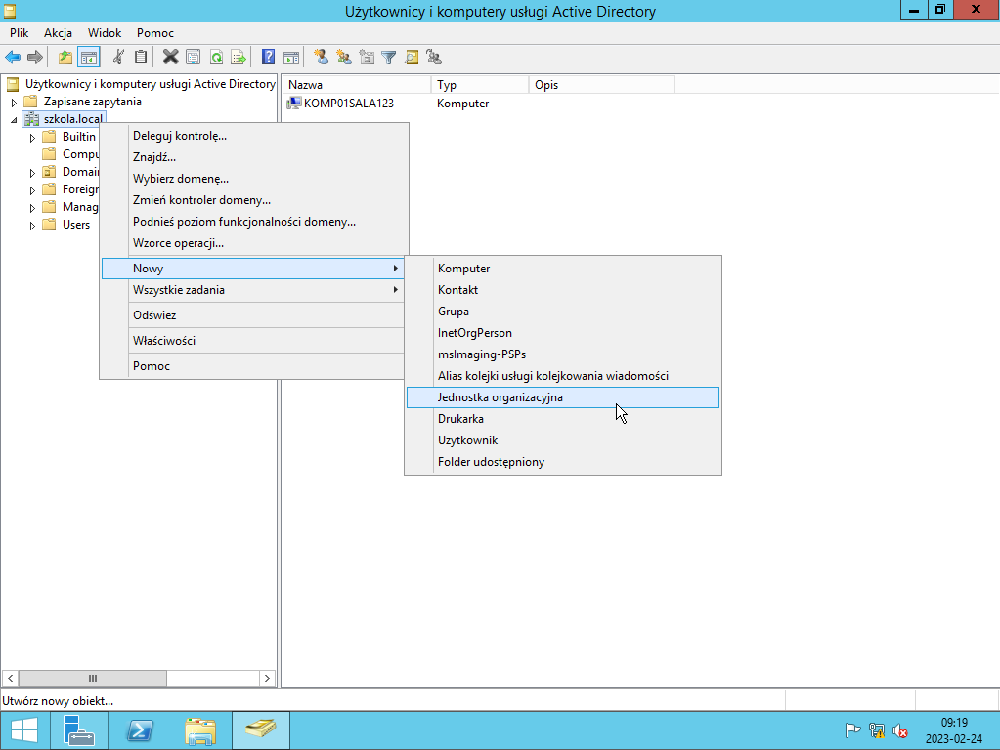
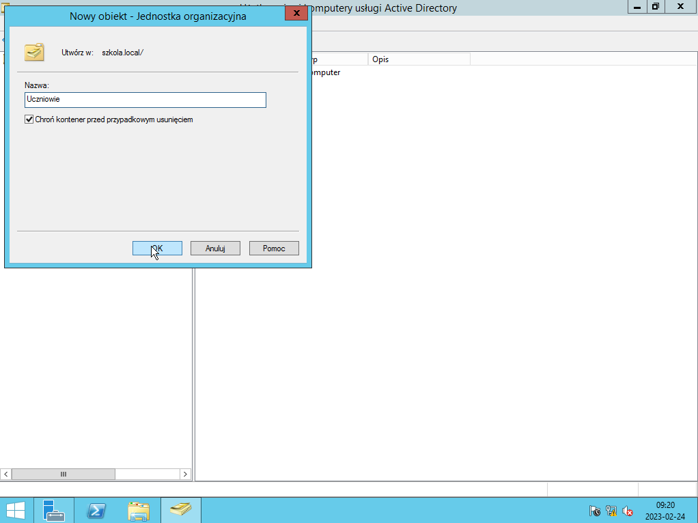
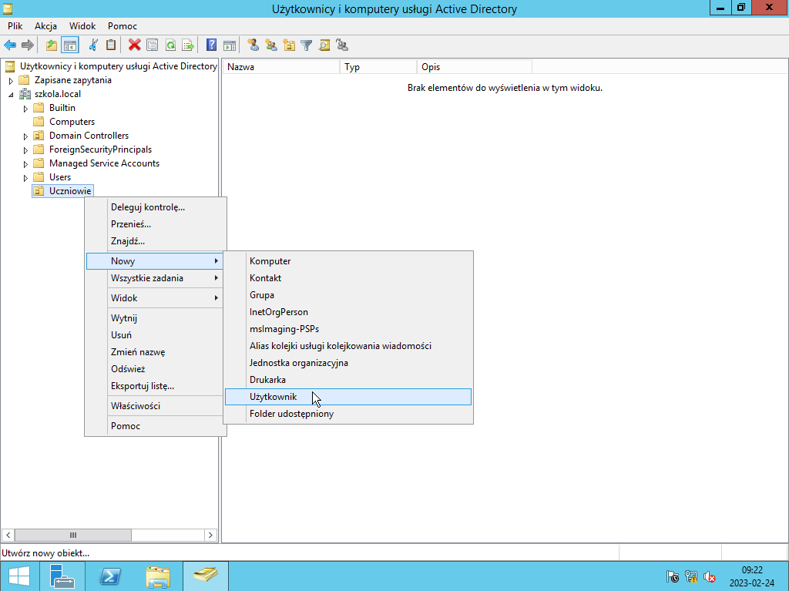
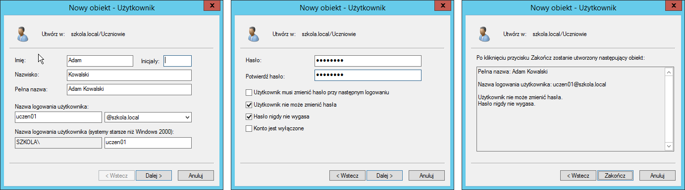
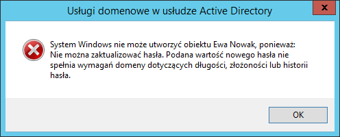
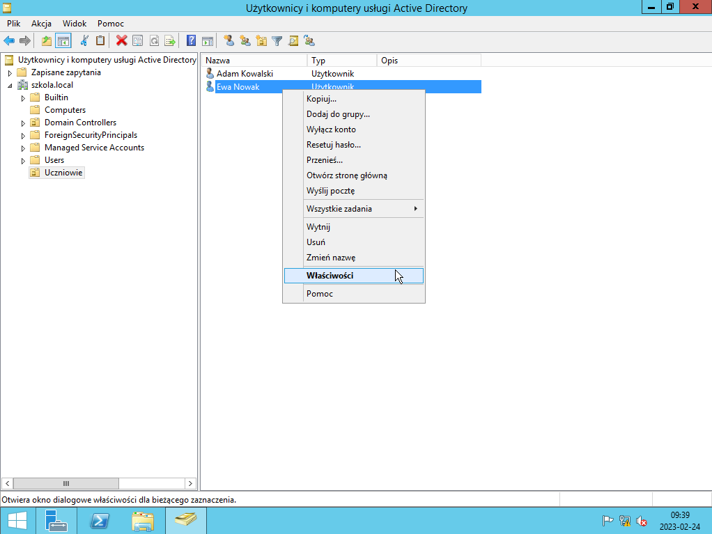
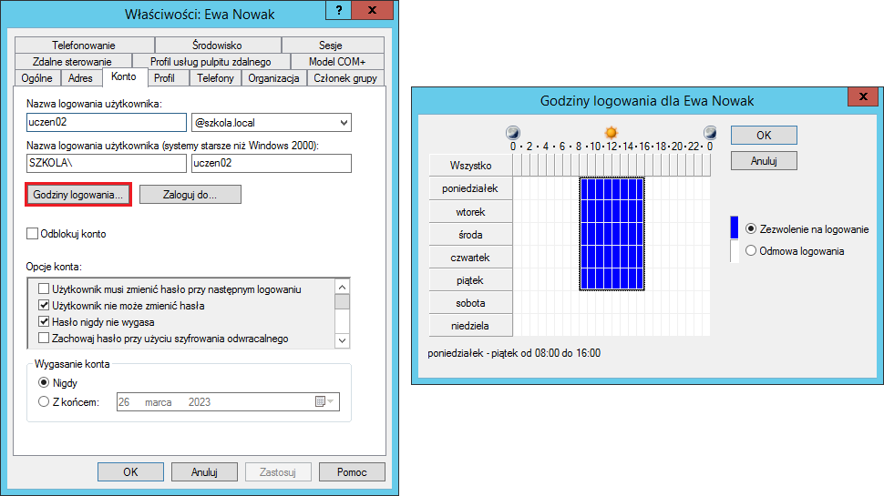

ADMINISTRACJA SYSTEMAMI OPERACYJNYMI / (AD) użytkownicy
Użytkownicy w usłudze domenowej AD (Active Directory)
Gdy mamy zainstalowaną i skonfugurowaną usługę domenową AD, możemy przystąpić do utworzenia użtkowników domenowych.W tym celu w Menadżerze serwera z munu wybierz "Narzędzia"
Z rozwinietego menu uruchom "Użytkownicy i komputery usługi Active Directory".  Po rozwinięcu w lewym panelu zakładki domeny (szkola.local), w katalogu "Computers", w prawym panelu bedą wyszystkie komputery podłączone do domeny.  Ogólnie warto segregować, więc segregujmy. Aby rozdzielić naszych nowych użytkowników od innych utwórz dla nich nową jednostkę organizacyjną.  Skoro domena nazywa się szkola.local, to pozostańmy w tej konwencji i stwórzmy jednostkę organizacyjną dla kont uczniowskich o nazwie "Uczniowie".  Klikając prawym przyciskiem myszy na jednostkę organizacyjną "Uczniowie", utwórz nowego użytkownika  Naszym celem jest stworzenie dwóch kont uczniowskich: uczen01 dla Adama Kowalskiego i uczen02 dla Ewy Nowak
 Hasło musi mieć 8 znaków. Dla wiekszego bezpieczenistwa powinno zawierać dużą i małą litere, znak specjalny oraz liczbe.  Gdy są już utworzone obydwa konta uczniów, zmodyfikuj ich właściwości.  W zakładce "Konto" kliknij i zmodyfikuj godziny logowania dla Adama i Ewy.
Zaznacz całość i wybierz odmowa logowania , po czym zaznacz zakres od poniedziałku do piątku w godzinach 8:00 - 16:00
Wybierając zezwolenie na logowanie , tak jak poniżej: 